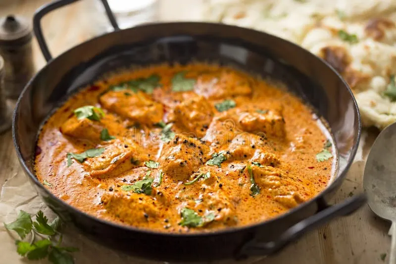

Butter Chicken

Description
Butter Chicken is a delicious and creamy Indian dish made with tender chicken cooked in a rich butter and tomato-based sauce.
Ingredients
- 500g boneless chicken, cut into pieces
- 2 tablespoons butter
- 1 onion, finely chopped
- 2 cloves garlic, minced
- 1 teaspoon ginger paste
- 1 teaspoon garam masala
- 1 teaspoon turmeric powder
- 1 teaspoon chili powder
- 1 cup tomato puree
- 1/2 cup heavy cream
- Salt to taste
- Fresh cilantro for garnish
Steps
- Heat butter in a pan over medium heat. Add chopped onions and sauté until golden brown.
- Add minced garlic and ginger paste, and cook for another minute.
- Add garam masala, turmeric powder, and chili powder. Stir well to combine.
- Add chicken pieces to the pan and cook until they are no longer pink.
- Pour in the tomato puree and simmer for 10-15 minutes until the chicken is cooked through.
- Stir in the heavy cream and cook for an additional 5 minutes.
- Season with salt to taste and garnish with fresh cilantro before serving.
Home